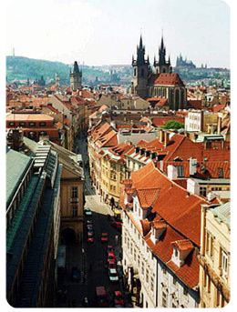

비행기는 수요일 새벽6시반이지만 체크인 4시반부터 하기위해서는
오늘 동네에서 공항버스를 11시15분에 타서
밤12시30분쯤 개트윅에 도착해서 4시간가량
또 공항 노숙자짓을 해야하는 상황.....;;;;;
(요게 막차입니다;; 24시간 2시간씩 운행이라믄서;;
거짓말 쟁이들 ;ㅂ; 홈페이지에 버스티켓 예약해보니
1시버스는 운행 안하는모냥;; 내가 이걸몰라서 전에 베를린갈때
택시비로 길바닥에 70파운드 뿌렸잖아 ㅜㅂㅜ)
게다가 뭐가 문제인지 3일전부터 집에는 인터넷이 안되고
(요것도 회사에 문의해보니 지금 우리블럭쪽 라인
전체회선에 문제가있는모양;;)
오늘 학교서 중요한 리뷰가있어서 좀 일찍갈려고
7시30분에 알람을 맞추고 새벽4시쯤 잠들었는데
알람을 저녁7시30분으로 맞춰놔서
9시반에 인났다매.......OTL
완전 패닉상태가 되어서 푸다다닥 화장실로 뛰갔는데
보일러가 고장나서 이추운날 찬물로 샤워하고
10분만에 준비해서 학교뛰어가서 아슬아슬하게 지각안했다능;;;
이건 뭐 시트콤도아니고 무슨일이 이렇게 줄줄이 일어나지? ㅜㅜ
(그리고 학교도착하고나서 한 2시간후에 하우스메이트 옆방 T양에게 문자가왔다
보일러 고장났는데 너 괜찮았냐고;;
아침에 굉장한 소리가 나던데;;; 라면서///)
이야;;;; 리뷰마치고 집에돌아가서 여행가방싸고
한숨 잔다음에 우아하게 샤워하고 상콤하게 출발할려던 나의계획이~~
나의계획이이이이~~~!!!! ㅜㅂㅜ
출발전부터 추하다니;; 넘 슬프다;;;;
여행에서 돌아오면 모든게 원래대로 돌아와있길
기도하믄서^^;;;
지금 우선 짐싸는게 문제이고나;;;;켈록켈록
여튼 댕겨오겠습니다.......OTL
젭알 2박3일 일정 무사히 마치기를^^;;;